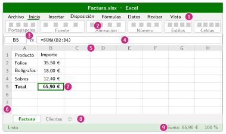
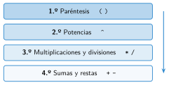
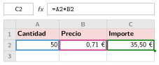

La hoja de cálculo: datos, formatos y operaciones
Criterios: 3a, 3b, 3g
🤔 Pienso10 min
Qué hago aquí: Piensa un momento y contesta con lo que ya sabes. No pasa nada si no lo sabes: es para empezar.
Escribe tres tareas de una oficina en las que haya que hacer cuentas o listas.
📖 Leo y aprendo40 min
Qué hago aquí: Lee despacio, mira los dibujos y los ejemplos, y quédate con la idea clave del final.
Una hoja de cálculo es un programa para trabajar con datos en forma de tabla: listas de clientes, facturas, presupuestos, notas… Su gran ventaja es que calcula sola: si cambias un dato, todos los resultados se actualizan. Las más usadas son Microsoft Excel, Hojas de cálculo de Google y LibreOffice Calc.

- 1 Pestañas
- 2 Cinta de opciones
- 3 Cuadro de nombres
- 4 Barra de fórmulas
- 5 Columnas (letras)
- 6 Filas (números)
- 7 Celda activa
- 8 Hojas del libro
- 9 Barra de estado
En una celda puedes escribir cuatro tipos de datos:
Folios A4 (a la izquierda)
35,50 (a la derecha)
15/01/2027
=B2*C2 (empieza por =)
Excel no hace las operaciones de izquierda a derecha, sino por prioridad:

Lo normal es calcular con referencias a celdas, no con números. Así, si cambia un dato, el resultado cambia solo:

El formato de celdas (

+

, o Inicio › Número) cambia cómo se ve un dato: número de decimales, separador de miles, moneda (€), porcentaje (%) o fecha. En Inicio también están la fuente, los bordes, el relleno, la alineación, Combinar y centrar y Ajustar texto.
=A2*B2) y usa paréntesis para cambiar el orden de las operaciones.✏️ Hago160 min
Qué hago aquí: Haz las actividades en orden. Empieza siempre por las básicas.
Escribe el nombre de cada parte de la ventana de Excel.
- Donde se ve la fórmula:
- Donde pone B5:
- Las pestañas Inicio, Insertar…:
- Donde cambias de hoja:
Escribe el rango de cada grupo de celdas.
- De la celda A1 a la A10:
- La fila 3, de B a F:
- De B2 a D5:
- ¿Cuántas celdas tiene B2:D5?
Calcula de cabeza lo que da cada fórmula. Después compruébalo en Excel.
Haz en Excel la tabla de operaciones elementales: sumas, restas, multiplicaciones, divisiones y potencias. Los títulos, con relleno amarillo y en negrita; los símbolos *, / y , en rojo.
Da formato a la tabla de ventas: números con dos decimales y separador de miles, importes en euros, títulos con Ajustar texto y centrados en horizontal y en vertical. Combina las celdas del título y gira el texto de «Totales por columnas».
Explica por qué esta fórmula para la media de tres notas da un resultado incorrecto y escríbela bien:
🚀 Amplío (si quieres saber más)
Qué hago aquí: ¿Has terminado? Lee la curiosidad o elige el reto. Es voluntario.
Un capital de 1000 € crece un 5 % cada año. Escribe la fórmula que da lo que habrá dentro de 10 años, usando una potencia. Compruébala en Excel.
✅ Compruebo10 min
Qué hago aquí: Contesta sin mirar la ficha y marca cómo lo llevas.